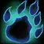

Tools
Talent calculator
Builds for all nine classes.

Druid abilities
Spells and ranks by level.
Raid planner
Rosters, buffs, and debuffs.
Feral analysis
767 survey responses · September 20–21, 2026
Builds for all nine classes.

Spells and ranks by level.
Rosters, buffs, and debuffs.
767 survey responses · September 20–21, 2026